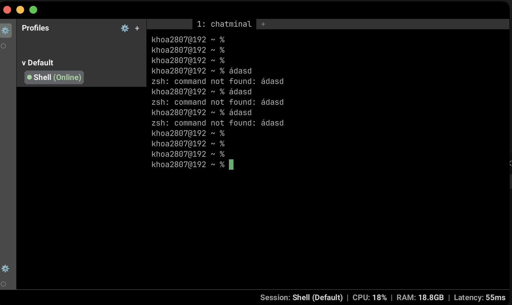

Desktop terminal workspace
The terminal that finally feels like a real app.
Chatminal keeps your sessions, layout, profiles, and terminal flow together in one focused desktop experience instead of a pile of throwaway windows.
macOS
Windows
Linux

Profiles + live shell
Everything stays in one desktop flow.
Ready to resume
Restore the app and keep your context alive.
Stateful
Local-first
Focused
Persistent sessions
Split workspace
Profiles
Restore-aware history
Desktop-first flow
macOS
Windows
Linux
Persistent sessions
Split workspace
Profiles
Restore-aware history
Desktop-first flow
Product
Built for people who live in the terminal, not for screenshots of commands.
Chatminal is a desktop app that turns terminal work into a cohesive workspace with visible structure and less repeated setup.
Interface
A visual walkthrough of what makes Chatminal different.
Instead of describing the app in abstract terms, the page now shows the product itself and labels the parts that matter.
Profile rail stays visible
Single desktop surface, less chaos
Status bar keeps the app feeling alive
Structured, not noisy
The shell is the hero, but the surrounding UI keeps it organized.
Space for long-running work
Keep one app open for real sessions instead of stacking random terminals.
Clearer to new users
Visual labels explain the app faster than a wall of feature text.
Why it feels better
The difference is less setup friction and more continuity.
Profiles that stay clean
Separate contexts without losing the sense of one app.
Split views that make sense
Keep related terminal work visible together, not hidden in tabs.
Resume instead of restart
Open Chatminal and feel like your workspace was waiting for you.
Desktop-first experience
Purpose-built for macOS, Windows, and Linux from one clean landing page.
Download